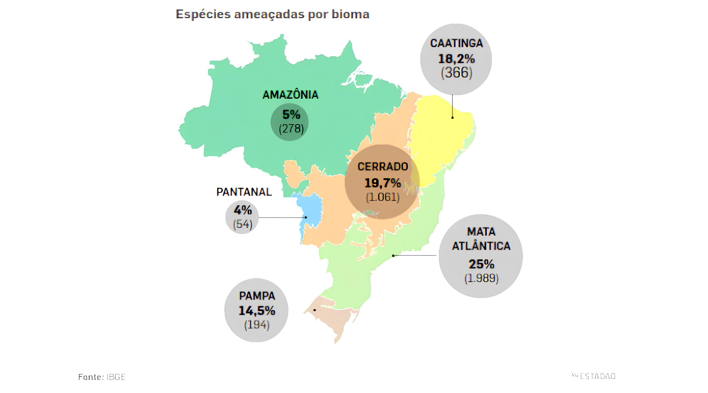

Sobre o Projeto
Coração da Mata é um projeto educativo que divulga informações sobre espécies ameaçadas de extinção em diversos biomas brasileiros.
Nosso objetivo é sensibilizar a sociedade para as questões ambientais e incentivar atitudes de preservação alinhadas aos Objetivos de Desenvolvimento Sustentável (ODS), especialmente o ODS 15 - Vida Terrestre, que visa a proteção, restauração e promoção do uso sustentável dos ecossistemas terrestres.
O Brasil abriga uma grande diversidade de biomas, cada um com características únicas e essenciais para a estabilidade ambiental do planeta. O Coração da Mata se dedica a explorar e divulgar as riquezas desses biomas, destacando as espécies que estão em risco e as ações necessárias para garantir sua sobrevivência.
Conheça mais explorando nossos biomas!
Biomas Brasileiros
Clique no respectivo bioma para acessar o catálogo completo de animais e plantas ameaçados e conhecer as espécies que precisam da sua ajuda para a preservação.

Mapa de Extinção por Bioma
-
Dados
Explore dados sobre o desaparecimento de espécies brasileiras e entenda os desafios enfrentados na preservação da nossa biodiversidade.
Saiba mais
Galeria de Imagens
Veja as belezas dos biomas e suas espécies.

Contato
Tem dúvidas ou sugestões? Entre em contato conosco:
📧 Email: kauanpedreira09@gmail.com
📞 Telefone: (75) 99221-1035